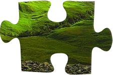
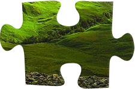
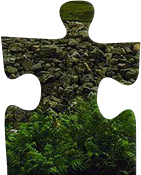
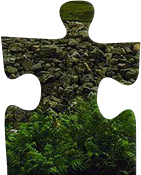
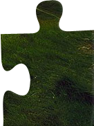
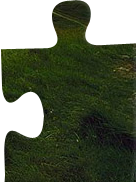

Oleksandr Holubenko
Ознайомлення з css-правилом "position"
Це правило встановлює спосіб позиціювання елементу відносно вікна чи інших об'єктів на веб-сторінці. Положення елементу задається атрибутами left, top, right і bottom відносно краю вікна браузера
Приклад блоку, в якому використовується значення absolute і reletive властивості position:


 



 

 

Значення властивості position
Ця властивість може мати чотири значення: static, reletive, absolute, fixed
absolute Вказує, що елемент абсолютно зпозиціонований, при цьому елементи відображаються на веб-сторінці ніби абсолютно зпозиціонованого елемента немає. Положення елемента задається значеннями lrft, top, right і bottom, а також на положення впливає значеннявластивості position батьківського елементу. Так, якщо у батьківського елементу значення position встановлено як static чи батька немає, то відлік координат ведеться від краю вікна браузера. Якщо у батька значення position задано як fixed, reletive, absolute, то відлік координат ведеться від краю батьківського елементу.
fixed За своєю поведінкою це значення близьке до absolute, але на відміну від нього прив'язується до вказаної властивостями left, top, right і bottom точки на екрані і не міняє свого положення при прокрутці веб-сторінки.
reletive Полложення елемента встановлюється відносно його початкового положення. Додавання властивостей left, top, right і bottom міняє позицію елементу і зміщує його в ту чи іншу сторону від початкового положення.
static Елементи відображаються як звично. Використання властивостей left, top, right і bottom не призводить до ніяких змін.
inherit Наслідує значення батьківського елементу.